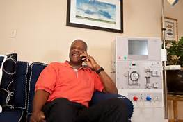

My passion and motivation resides with Americans who are disabled due to End Stage Renal Disease.
There are many people unable to work due to dialysis treatment.
Through the use of Home Hemodialysis, more people are able to live a sustaining life and have the ability to return to work.
In December 2012, I was finally diagnosis with End Stage Renal Disease. The only alternative for me was a transplant or dialysis. After one failed transplant,
four years later I am still on dialysis and trying to live life to its fullest. I started doing home hemodialysis a year ago and this style of treatment has
allowed me to maintain my job and lifestyle. I want to be able to share my experiences with people to inform them that dialysis is not the end of the road.

The ability to recieve dialysis in your Home.
The opportunity to create a financially successful career
Quality hand-crafted expresso shots pulled with the greatest of care.